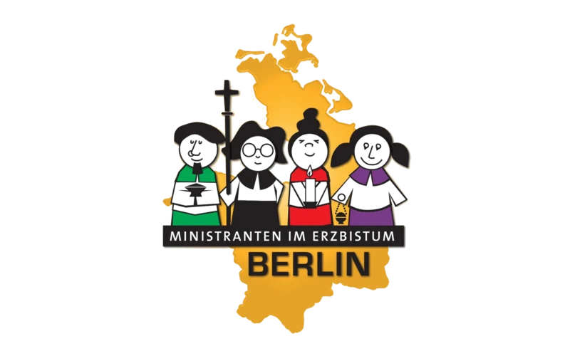

Ministranci – Służba Liturgiczna
Dzieci i młodzież, które z radością i odpowiedzialnością służą przy ołtarzu podczas Mszy Świętych i nabożeństw w Polskiej Misji Katolickiej w Berlinie.

Dzieci i młodzież, które z radością i odpowiedzialnością służą przy ołtarzu podczas Mszy Świętych i nabożeństw w Polskiej Misji Katolickiej w Berlinie.

„Oto idę pełnić Twoją wolę". Służba przy ołtarzu to wielki przywilej i odpowiedź na Boże zaproszenie — by być blisko Chrystusa Eucharystycznego.
— inspirowane Hbr 10,7
Jesteśmy wspólnotą ministrantów PMK Berlin — chłopców, którzy pełnią służbę liturgiczną przy ołtarzu w polskiej parafii. Należymy do Ministranckiej Pastoralnej Archidiecezji Berlińskiej (Ministrantenpastoral im Erzbistum Berlin) i tworzymy żywą część duszpasterstwa PMK.
Naszym podstawowym zadaniem jest godne usługiwanie kapłanowi podczas Mszy Świętej i nabożeństw. Dbamy o piękno liturgii — niesiemy świece i krzyż, podajemy ampułki, dzwonimy, czytamy Słowo Boże, śpiewamy psalmy.
Służba ministranta to nie tylko obecność przy ołtarzu — to także droga formacji duchowej, poznawania Pisma Świętego, zgłębiania znaczenia gestów i symboli liturgicznych.
Stałymi elementami życia naszej wspólnoty są:
Asysta przy ołtarzu podczas Mszy Świętych i nabożeństw w parafii.
Nauka liturgii, modlitwa, rozmowy o wierze, wspólne katechezy.
Przygotowanie starszych ministrantów do posługi czytania Słowa Bożego.
Pielgrzymki, dni skupienia, obozy i wspólne wydarzenia w ciągu roku.
Zapraszamy chłopców, którzy przyjęli już Pierwszą Komunię Świętą. Nie wymagamy doświadczenia — wystarczą chęci, otwarte serce i radość ze służby Bogu.
Jeśli jesteś rodzicem i chcesz zapisać dziecko, lub jesteś młodym człowiekiem zainteresowanym dołączeniem do naszej wspólnoty — napisz do nas. Z radością odpowiemy na każde pytanie.